Jettro Coenradie thu 3 dec · 19:00 · de makersfabriek, zwolle
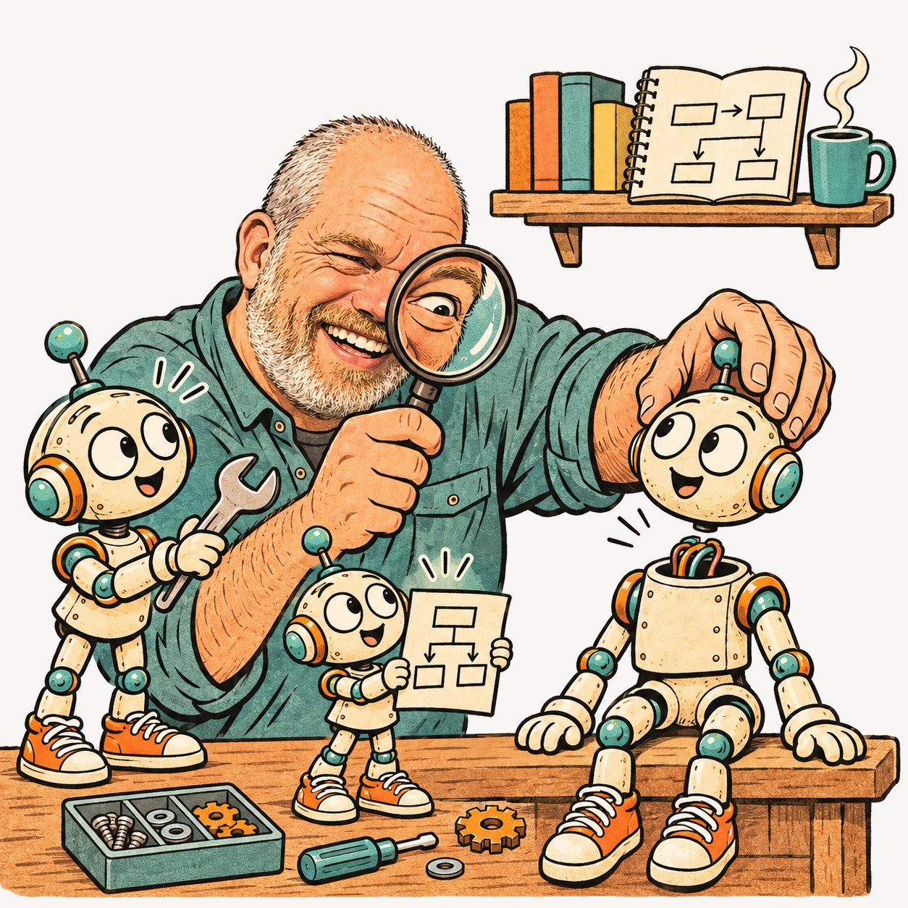
image to come: me-comic.jpg - see talk/image_prompts.md
'">
Jettro Coenradie
Principal Consultant Search and AI expert
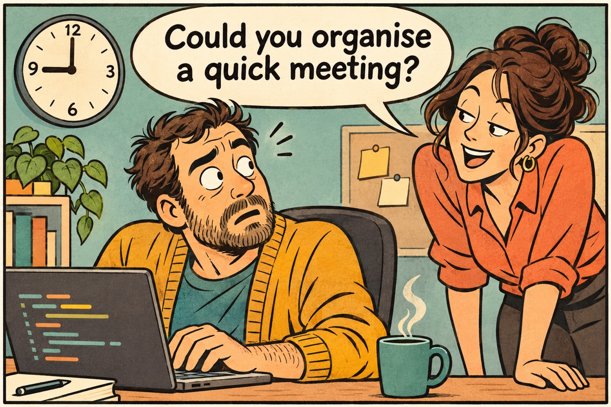
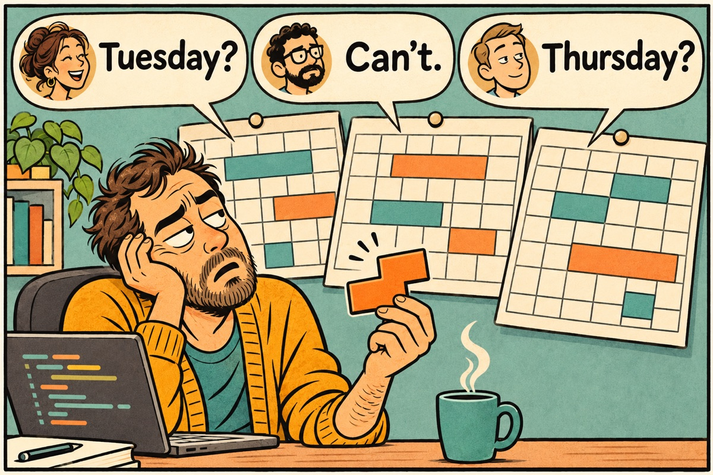
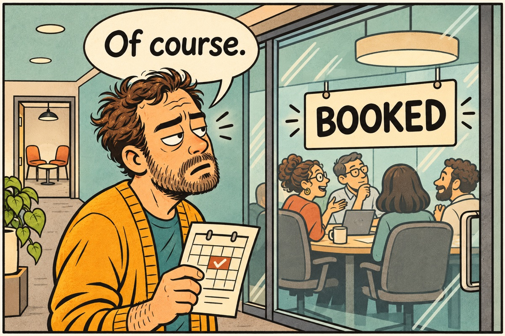
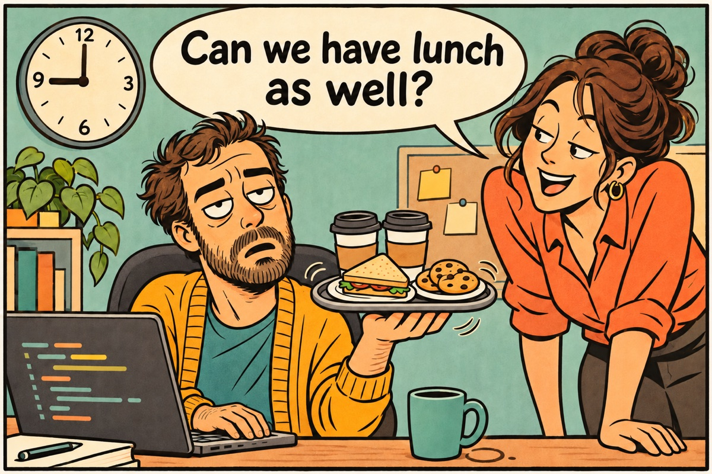
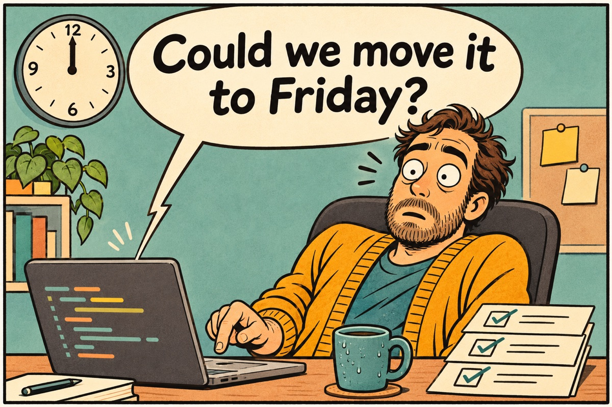
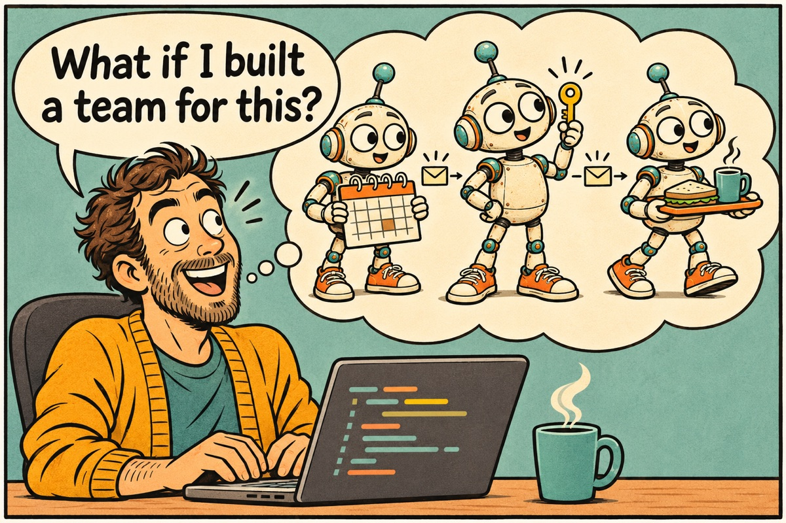
What is an agent?
anthropic.com
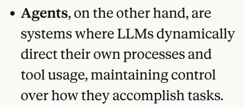
Anthropic · Building effective agents · 2024
openai.com
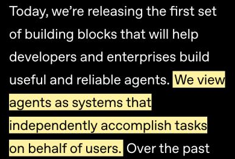
OpenAI · New tools for building agents · 2025
cloud.google.com
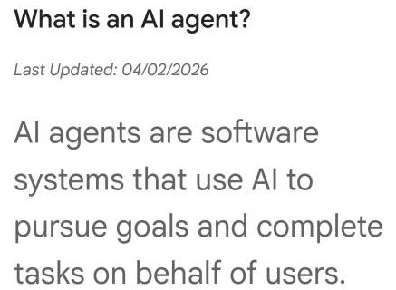
Google Cloud · What is an AI agent? · 2026
ibm.com
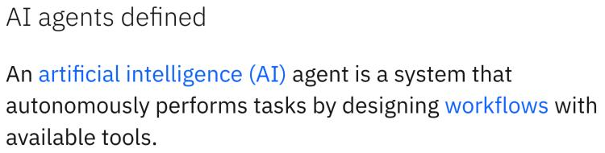
IBM · What are AI agents?
An LLM agent runs tools in a loop to achieve a goal.
simonwillison.net
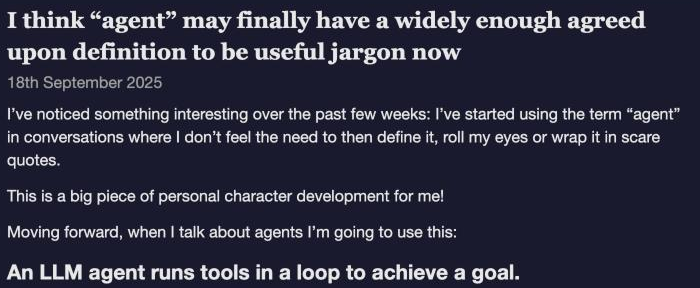
Simon Willison, September 2025 - “agent” finally has a widely enough agreed definition
1 Just call an LLM
the LLM
from pydantic_ai import Agent
agent = Agent("openai:gpt-6-luna")
question = "What is the date of next Friday?"
print(f"> {question}\n")
result = agent.run_sync(question)
print(result.output)
A few lines - and it does not know what day it is.
2 Give it context
context
from datetime import date
from pydantic_ai import Agent
agent = Agent("openai:gpt-6-luna", instructions="You plan meetings. Answer in one sentence.")
@agent.instructions
def today() -> str:
return f"Today is {date.today():%A %d %B %Y}."
question = "What is the date of next Friday?"
print(f"> {question}\n")
result = agent.run_sync(question)
print(result.output)
The same question. Now it can answer.
3 Simulate memory
memory
from datetime import date
from pydantic_ai import Agent
agent = Agent("openai:gpt-6-luna", instructions="You plan meetings. Answer in one sentence.")
@agent.instructions
def today() -> str:
return f"Today is {date.today():%A %d %B %Y}."
question = "My name is Sam, and I need a room for six people next Friday."
print(f"> {question}\n")
first = agent.run_sync(question)
print(first.output)
question = "What was my name, and for how many people?"
print(f"\n> {question}\n")
second = agent.run_sync(question, message_history=first.all_messages())
print(second.output)
4 Give it a tool
tools
from datetime import date
from pydantic_ai import Agent
agent = Agent("openai:gpt-6-luna", instructions="You plan meetings. Answer in one sentence.")
@agent.instructions
def today() -> str:
return f"Today is {date.today():%A %d %B %Y}."
@agent.tool_plain
def free_rooms(day: date, people: int) -> list[str]:
"""The meeting rooms that are free on a day, for a number of people."""
print(f" > tool: free_rooms({day}, {people})")
return ["Attic (8)", "Greenhouse (6)"] if people <= 6 else ["Attic (8)"]
question = "My name is Sam, and I need a room for six people next Friday."
print(f"> {question}\n")
first = agent.run_sync(question)
print(first.output)
question = "Which rooms are free?"
print(f"\n> {question}\n")
second = agent.run_sync(question, message_history=first.all_messages())
print(second.output)
Run it
make run-llmjust an LLM
make run-systemcontext: today
make run-memorymemory
make run-toola tool
gpt-6-luna · pydantic-ai
The sample: a meeting planner
“A design review with Sanne and Daan on Tuesday, somewhere quiet. And lunch.”
Agendasfind a time everyone is free, put it in their agenda
Placeschoose a place that fits “somewhere quiet”, book a room
Lunchturn “vegetarian, no bread” into an order
You approvethe time and place, and lunch - nothing is booked before you say yes
A job everybody knows - you focus on the agents, not the domain.
One agent, three MCP servers
“A design review with Sanne and Daan on Tuesday, somewhere quiet. And lunch.”
@Agent one prompt · gpt-6-luna
meeting serviceMCP · 6 tools
list_peoplefind_common_slotsbook_meeting+ 3 more
location serviceMCP · 5 tools
list_locationsget_room_availabilitybook_room+ 2 more
nomnom serviceMCP · 5 tools
get_menusearch_productplace_order+ 2 more
Sixteen tools, one prompt. Can it do the whole job?
5 Connect it to MCP servers
tools, over MCP
from pydantic_ai import Agent
from pydantic_ai.mcp import MCPToolset
agent = Agent(
"openai:gpt-6-luna",
instructions=(
"You plan meetings: find a time, book a room, order lunch. "
"Nobody can answer questions: decide for yourself and finish the whole job."
),
toolsets=[
MCPToolset(os.environ["MEETING_MCP_URL"], auth=os.environ["MEETING_MCP_API_KEY"]),
MCPToolset(os.environ["LOCATION_MCP_URL"], auth=os.environ["LOCATION_MCP_API_KEY"]),
MCPToolset(os.environ["NOMNOM_MCP_URL"], auth=os.environ["NOMNOM_MCP_API_KEY"]),
],
)
# + today's date in the instructions, as in step 2
request = "A design review with Sanne and Daan on Tuesday, somewhere quiet. And lunch."
print(f"> {request}\n")
result = agent.run_sync(request, event_stream_handler=show_calls)
print(result.output)
Run it
make run-meetingone agent, sixteen tools
“A design review with Sanne and Daan on Tuesday, somewhere quiet. And lunch.”
it books for real - in the local services
It worked. And it decided everything.
the agenta real task
the timepicked one: 11:00, 13:00, 14:00 in three runsthe organiser approves the time
the lunchordered two or three sandwichesthe organiser says what to eat
the bookingswent out uncheckedeach booking is checked against the request
Its prompt said: Nobody can answer questions: decide for yourself.
A real task needs approvals and checks.
One agent, every job
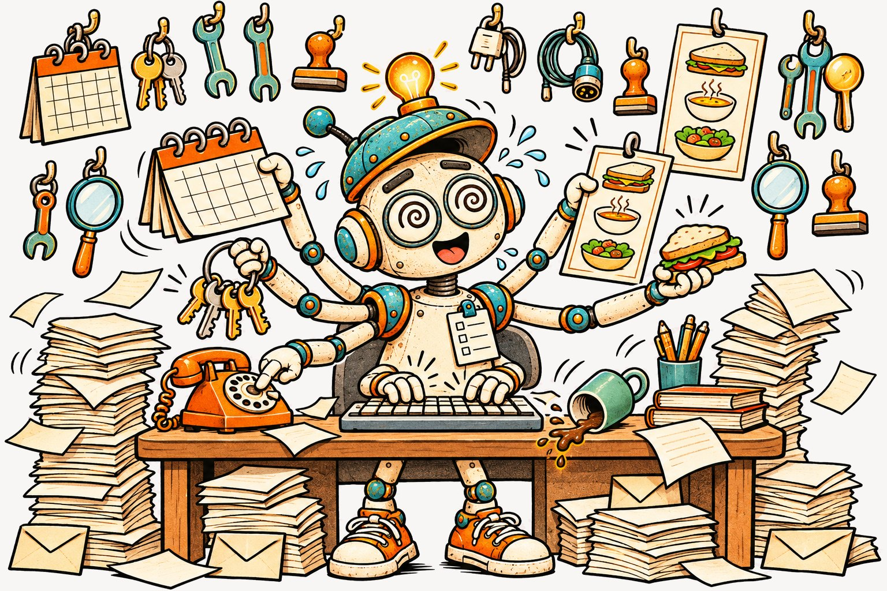
image to come: art-1-solo.jpg - see talk/image_prompts.md'">
Sixteen tools, three services, every step - one prompt holds it all.
Split the work
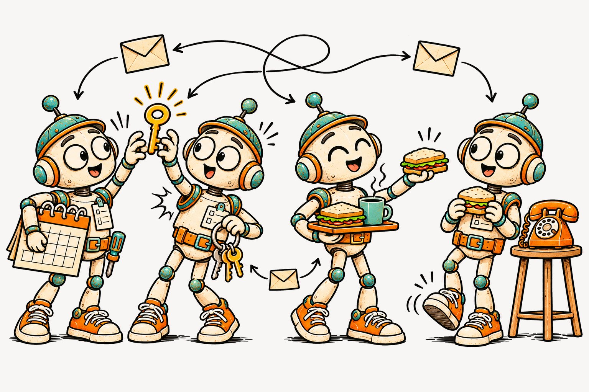
image to come: art-2-team.jpg - see talk/image_prompts.md'">
Each job is lighter. But who decides - and who notices when two do the same thing?
Start with one agent, but…
“Find the simplest solution possible” - Anthropic · “Maximize a single agent’s capabilities first” - OpenAI · “Don’t build multi-agents” - Cognition
Start with one agent
simpler to build, trace and debug
one context - no decision gets lost between agents
cheaper - a team costs 3 to 15 times the tokens
work in a chain gets worse with a team: −39 to −70 %
Move to a team when
the context fills up with what the other parts do not need
the work splits up, and can run side by side: +81 %
one prompt holds too many tools to choose well
the parts carry different risks - agendas, rooms, money
Anthropic, When to use multi-agent systems, January 2026 · Google Research, Towards a science of scaling agent systems, January 2026 · Cognition, 2025
Split when the work, the context or the risk pulls apart.
Five ways to arrange a team
Pipelineone after the other
Anthropic: prompt chaining · Google, Microsoft: sequentialFan-outside by side, then gather
Anthropic: parallelization · Google: parallel · Microsoft: concurrentOrchestratorone in charge - nested, a hierarchy
Anthropic: orchestrator-workers · OpenAI: manager · LangChain: supervisorHandoffpass the conversation on
Anthropic: routing · OpenAI, Microsoft: handoff · Google: transferGroup chateveryone in one conversation
Microsoft: group chat · LangChain: network, swarm
Put someone in charge
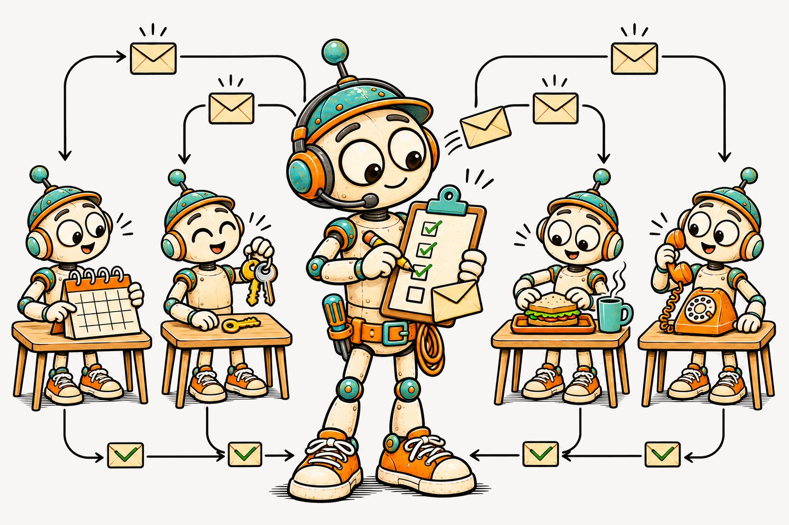
image to come: art-3-lead.jpg - see talk/image_prompts.md
'">
one agent1×
a team, nobody in charge17×
a team with an orchestrator4×
how much a mistake grows, compared with one agent
Google Research, Towards a science of scaling agent systems, January 2026
Mistakes stop at the one in charge - in the sample, plain code.
Split agents like services
meeting servicepeople · agendas
@Scheduler
location serviceplaces · rooms
@FacilityManager
nomnom servicelunch menu · orders
@Catering
by bounded context - not by job title
“Decomposition follows context, not problem type.”Anthropic · January 2026
How it is built
@Scheduler LLM
finds a time, books it
@FacilityManager LLM
chooses a place, books a room
@Catering LLM
reads the menu, orders lunch
@Coordinator plain code · no LLM
knows the steps, asks you twice, keeps the record
@Human
you, inside the team
meeting service
people · agendas
REST · OpenAPIMCP · tools
location service
places · rooms
REST · OpenAPIMCP · tools
nomnom service
lunch menu · orders
REST · OpenAPIMCP · tools
Code where the answer is known, a model where judgement is needed.
What if I built a team for this? Then it has to answer
Five questions for every team
one agenta team
1Who does what?one prompt does it alleach agent its part - in configuration
2How do they talk?one conversationtyped messages, addressed to one agent
3What if a step fails?the model has to rememberthe one in charge holds the record
4What do they remember?its own conversationwho sees what - decided in code
5Who may do what?one set of rightsrights at every hop
the framework under the sample
akgentic
agents as actors, teams as configuration
pip install "akgentic-framework[all]"
open source · AGPL-3.0 · Python 3.12+ github.com/b12consulting/akgentic-framework
powered by
Actorsevery agent has its own mailbox and state; agents talk in typed messagesin the sample: 26 message types
Teamsa tree of who creates whom; hire and fire members by role while it runsin the sample: the crew
Catalogassemble a team from YAML - no code changes; YAML, MongoDB or PostgreSQLin the sample: 30 cards
Any modelpydantic-ai underneath: OpenAI, Azure, Anthropic, Google, Mistral, NVIDIAin the sample: gpt-6-luna
Tools and hooksMCP servers, web search, a workspace, a knowledge graph; a hook before every tool callin the sample: MCP, booking rules
Durable, and visibleevent sourced: recover from a crash, resume a stopped team; a console to watch it workin the sample: the console
The framework does the plumbing. The sample is only the team.
A team is configuration
team.yaml
@Human
@Coordinator
@Scheduler
@FacilityManager
@Catering
+ the 26 message types the team may send
facility_manager.yaml
@FacilityManageragent_class: FacilityManager
prompt
facility_manager_prompt.yaml
52 lines of instructions
model_cfg
default_model.yaml
openai · gpt-6-luna
tools
location_mcp.yaml
the location service’s MCP server
tools
booking_rules.yaml
the guardrail - no tool for the model
Who is on the team, which model, which prompt, which tools - not in Python.
the chat guard
→ next file · scroll, or jk
How do agents talk?
A shared conversation
@Scheduler Tuesday 10:00 works for everyone, I think?
@FacilityManager The Library is quiet. Shall I book it?
@Catering Sandwiches for three, or was it four?
everyone reads everything
free text, in and out
who decides?
Messages
@Coordinator → @SchedulerFindSlotsAssignment
@Scheduler → @CoordinatorSlotsFound
@Coordinator → youSlotApprovalRequest
addressed to one agent
a fixed shape - a type
the receiver’s code decides what happens
Agents talk in messages, not in a chat.
A message is a type
Pydantic
class BookMeetingAssignment(Message):
"""@Scheduler: the human approved this slot; put it in the agendas."""
plan_id: str
title: str
participant_emails: list[str]
day: date
slot: ProposedSlot
def rendering(self) -> str: # the words the model reads
return f"Book '{self.title}' on {self.day} from ... Report the meeting id you get back."
class MeetingBooked(Message):
"""@Scheduler -> @Coordinator."""
plan_id: str
meeting_id: int
Validated when it is madea day that is not a date never leaves the coordinator
A contract between two agentsa renamed field breaks a test, not a demo
Typed for code, words for the modelrendering() is the instruction it gets
The model answers in a type, too
structured output
BookMeetingAssignment→the model + its tools→BookedMeeting→MeetingBooked
class BookedMeeting(BaseModel):
"""@Scheduler's answer to 'book this slot'."""
succeeded: bool
meeting_id: int | None = Field(
default=None,
description="The exact meeting id the booking tool returned. Never invent one.",
)
reason: str = Field(default="", description="If succeeded is false, why not.")
def receiveMsg_BookMeetingAssignment(self, message, sender):
booked = self.attempt(message, BookedMeeting, message.plan_id, sender)
if booked is None:
return
if not booked.succeeded or booked.meeting_id is None:
self.fail(message.plan_id, booked.reason or "the meeting was not booked", sender)
return
self.send(sender, MeetingBooked(plan_id=message.plan_id, meeting_id=booked.meeting_id))
Free text never crosses from one agent to the next. A failure is a field.
One meeting, in messages
Why talk in messages?
A trace, for freeevery message is an event - who sent what to whom, and when
Waiting costs nothingyour answer may come a day later; nothing is blocked while it does
Durablekeep the messages, and a stopped team can be revived where it was
Testablesend an agent a message, check what it sends back - no model needed
Design the messages, and the team follows.
What if a step fails halfway?
book_meetingmeeting 34
book_roomfailed - the room was taken
PlanFailed “Still booked, and not yet undone: cancel_meeting 34”
you press Cancelcancel_meeting 34
a whole meetingcancel_order → cancel_room_booking → cancel_meeting - reverse order, one at a time
one agent
the bookings are somewhere in one long conversation; undoing them is something the model has to think of
a team
@Coordinator holds the record - every id, saved on every change - and code knows what to undo, and in which order
Someone holds the record, so someone can undo it.
Before we go live: the code
@Coordinator asks @Human
Show the repository to the room?
nothing is shown before you approve · press →
go.jettro.dev/pulse
✓ approved by @Human
Talk to the planner
@Human you, in your own words
@Intake the conversation - an LLM
asks @Scheduler who is Sanne? · asks @FacilityManager which place?
The model listens; the coordinator decides; the human approves.
What outlives the team: one memory
---kind: facta fact or a preferencescope: person:sanne@rag4p.orgabout whom: you · a person · a placesituation: lunchwhen it appliessaid_by: jettro@rag4p.orgwho said it - a person, never a guessevidence: conversation 5210988d-…where it was said---Sanne is vegetarian.the words, as said
The textbooks name three kinds: semantic (facts) · episodic (what happened) · procedural (how to act).
Kept here: semantic only. What happened stays in the meetings’ records; how to act stays in the prompts.
Shared files, not a shared brain
Yours<you>/memory/organiser.md
About a personshared/people/<email>.md
About a placeshared/places/<id>.md
@Intake
every turn
once a lookup settles who
when it looks the place up
@FacilityManager
-
-
before choosing · before booking
@Keeper
when you ask it to tidy
-
-
@Scheduler · @Catering · @Coordinator
-
-
-
Code hands each agent its part - no agent can search memory.
Guardrails: a check before the call
@FacilityManager’s modelfills in the arguments itself